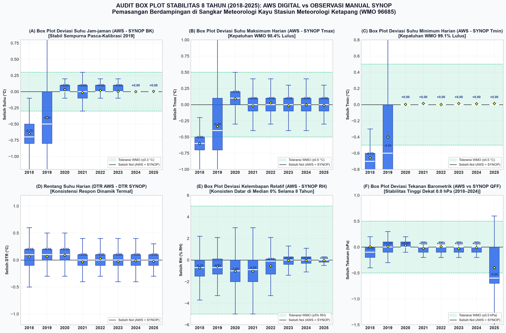

<!DOCTYPE html>
<html lang="id" class="scroll-smooth">
<head>
    <meta charset="UTF-8">
    <meta name="viewport" content="width=device-width, initial-scale=1.0">
    <title>Master Audit Meteorologi & Metrologi Sensor (2018–2026) | Stamet Ketapang</title>
    <!-- Tailwind CSS CDN -->
    <script src="https://cdn.tailwindcss.com"></script>
    <script>
        tailwind.config = {
            theme: {
                extend: {
                    colors: {
                        bmkg: {
                            50: '#f0f9ff',
                            100: '#e0f2fe',
                            600: '#0284c7',
                            700: '#0369a1',
                            800: '#075985',
                            900: '#0c4a6e',
                        }
                    }
                }
            }
        }
    </script>
    <!-- Font Awesome -->
    <link rel="stylesheet" href="https://cdnjs.cloudflare.com/ajax/libs/font-awesome/6.4.0/css/all.min.css">
    <!-- Google Fonts -->
    <link rel="preconnect" href="https://fonts.googleapis.com">
    <link rel="preconnect" href="https://fonts.gstatic.com">
    <link href="https://fonts.googleapis.com/css2?family=Inter:wght@300;400;500;600;700;800&family=JetBrains+Mono:wght@400;500;600&display=swap" rel="stylesheet">
    <!-- KaTeX for math formulas -->
    <link rel="stylesheet" href="https://cdn.jsdelivr.net/npm/katex@0.16.8/dist/katex.min.css">
    <script defer src="https://cdn.jsdelivr.net/npm/katex@0.16.8/dist/katex.min.js"></script>
    <script defer src="https://cdn.jsdelivr.net/npm/katex@0.16.8/dist/contrib/auto-render.min.js" onload="renderMathInElement(document.body);"></script>

    <style>
        body { font-family: 'Inter', sans-serif; }
        code, pre { font-family: 'JetBrains Mono', monospace; }
        .glass-card {
            background: rgba(255, 255, 255, 0.95);
            backdrop-filter: blur(10px);
            border: 1px solid rgba(226, 232, 240, 0.8);
        }
    </style>
</head>
<body class="bg-slate-50 text-slate-800 antialiased min-h-screen flex flex-col">

    <!-- Top Navigation Bar -->
    <header class="sticky top-0 z-50 bg-white/95 backdrop-blur-md border-b border-slate-200 shadow-sm">
        <div class="max-w-7xl mx-auto px-4 sm:px-6 lg:px-8 h-16 flex items-center justify-between">
            <div class="flex items-center space-x-3">
                <div class="w-10 h-10 rounded-xl bg-gradient-to-tr from-blue-700 via-indigo-600 to-cyan-500 flex items-center justify-center text-white shadow-md shadow-blue-500/20">
                    <i class="fa-solid fa-cloud-bolt text-lg"></i>
                </div>
                <div>
                    <h1 class="text-base font-bold text-slate-900 leading-tight">Master Audit Meteorologi & Metrologi</h1>
                    <p class="text-xs text-slate-500 font-medium">Stamet Kelas III Rahadi Oesman Ketapang (2018–2026)</p>
                </div>
            </div>
            
            <nav class="hidden xl:flex items-center space-x-1 text-xs font-semibold text-slate-600">
                <a href="#fase-database" class="px-2 py-1.5 rounded-lg hover:text-blue-600 hover:bg-slate-100 transition">1. Database</a>
                <a href="#fase-multiparameter" class="px-2 py-1.5 rounded-lg hover:text-blue-600 hover:bg-slate-100 transition">2. Multi-Parameter</a>
                <a href="#perbedaan-synop-aws" class="px-2.5 py-1.5 rounded-lg text-emerald-700 bg-emerald-50 hover:bg-emerald-100 transition font-bold">★ SYNOP vs AWS (WMO)</a>
                <a href="#fase-termal" class="px-2 py-1.5 rounded-lg hover:text-blue-600 hover:bg-slate-100 transition">3. Peluruhan Termal</a>
                <a href="#fase-kalibrasi" class="px-2 py-1.5 rounded-lg hover:text-blue-600 hover:bg-slate-100 transition">4. Kalibrasi 2-Thn</a>
                <a href="#fase-boxplot" class="px-2 py-1.5 rounded-lg hover:text-blue-600 hover:bg-slate-100 transition">5. Audit Box Plot</a>
                <a href="#fase-adjustment" class="px-2 py-1.5 rounded-lg hover:text-blue-600 hover:bg-slate-100 transition">6. Zero Drift</a>
                <a href="#fase-rekomendasi" class="px-2 py-1.5 rounded-lg hover:text-blue-600 hover:bg-slate-100 transition">7. Rekomendasi</a>
                <a href="#fase-linimasa" class="px-2 py-1.5 rounded-lg text-blue-700 bg-blue-50 hover:bg-blue-100 transition">8. Linimasa</a>
            </nav>

            <div class="flex items-center space-x-2">
                <a href="https://github.com/ariffu/awos-ketapang-audit" target="_blank" class="inline-flex items-center space-x-1.5 px-3 py-1.5 text-xs font-semibold rounded-lg bg-slate-900 text-white hover:bg-slate-800 transition">
                    <i class="fa-brands fa-github"></i>
                    <span class="hidden sm:inline">GitHub Repo</span>
                </a>
                <button onclick="window.print()" class="inline-flex items-center space-x-1.5 px-3 py-1.5 text-xs font-semibold rounded-lg border border-slate-300 text-slate-700 hover:bg-slate-50 transition">
                    <i class="fa-solid fa-print"></i>
                    <span class="hidden sm:inline">Cetak / PDF</span>
                </button>
            </div>
        </div>
    </header>

    <!-- Hero Header -->
    <div class="bg-gradient-to-b from-slate-900 via-blue-950 to-slate-900 text-white py-14 px-4 sm:px-6 lg:px-8 border-b border-slate-800">
        <div class="max-w-5xl mx-auto text-center space-y-4">
            <div class="inline-flex items-center space-x-2 px-3 py-1 rounded-full bg-blue-500/20 border border-blue-400/30 text-blue-300 text-xs font-semibold tracking-wide uppercase">
                <span class="w-2 h-2 rounded-full bg-emerald-400 animate-pulse"></span>
                <span>Laporan Komprehensif Siklus Penuh: Data Engineering, Quality Control & Metrologi</span>
            </div>
            <h2 class="text-3xl sm:text-4xl lg:text-5xl font-extrabold tracking-tight text-white leading-tight">
                Rekonstruksi Database 1-Menitan, Audit Multi-Parameter & Stabilitas Sensor (2018–2026)
            </h2>
            <p class="text-base sm:text-lg text-slate-300 max-w-4xl mx-auto leading-relaxed">
                Dokumentasi lengkap perjalanan teknis Stasiun Meteorologi Kelas III Rahadi Oesman Ketapang: dari ekstraksi jutaan baris data mentah AWOS, perbaikan saluran sensor, gap-filling meteorologis, hingga pengujian kepatuhan kalibrasi WMO No. 8 dan justifikasi efisiensi biaya.
            </p>
            <div class="pt-2 flex flex-wrap items-center justify-center gap-2.5 text-xs sm:text-sm text-slate-300">
                <span class="bg-slate-800/90 px-3 py-1.5 rounded-lg border border-slate-700/60"><i class="fa-solid fa-location-dot text-rose-400 mr-1.5"></i>Stamet Ketapang (WMO 96685)</span>
                <span class="bg-slate-800/90 px-3 py-1.5 rounded-lg border border-slate-700/60"><i class="fa-solid fa-database text-cyan-400 mr-1.5"></i>3 Database DuckDB (3.7+ Juta Baris)</span>
                <span class="bg-slate-800/90 px-3 py-1.5 rounded-lg border border-slate-700/60"><i class="fa-solid fa-chart-line text-amber-400 mr-1.5"></i>6 Parameter Utama</span>
                <span class="bg-slate-800/90 px-3 py-1.5 rounded-lg border border-slate-700/60"><i class="fa-solid fa-certificate text-emerald-400 mr-1.5"></i>Kalibrasi 2023–2026</span>
                <span class="bg-slate-800/90 px-3 py-1.5 rounded-lg border border-slate-700/60"><i class="fa-solid fa-shield-halved text-indigo-400 mr-1.5"></i>WMO No. 8 Compliant</span>
            </div>
        </div>
    </div>

    <!-- Main Content Container -->
    <main class="max-w-7xl mx-auto px-4 sm:px-6 lg:px-8 py-10 space-y-16 flex-grow">

        <!-- Executive Metrics Grid -->
        <section class="grid grid-cols-1 md:grid-cols-2 lg:grid-cols-4 gap-5">
            <div class="glass-card p-5 rounded-2xl shadow-sm border border-slate-200/80 hover:shadow-md transition">
                <div class="text-xs font-semibold text-slate-500 uppercase tracking-wider mb-1">Volume Data 1-Menitan</div>
                <div class="text-3xl font-extrabold text-blue-600">3.7+ Juta</div>
                <div class="text-xs text-slate-600 mt-2 flex items-center">
                    <i class="fa-solid fa-server text-blue-500 mr-1.5"></i>
                    <span>Tersimpan di database analitis DuckDB</span>
                </div>
            </div>

            <div class="glass-card p-5 rounded-2xl shadow-sm border border-slate-200/80 hover:shadow-md transition">
                <div class="text-xs font-semibold text-slate-500 uppercase tracking-wider mb-1">Laju Drift Suhu 8 Tahun</div>
                <div class="text-3xl font-extrabold text-emerald-600">0.00 &deg;C/thn</div>
                <div class="text-xs text-slate-600 mt-2 flex items-center">
                    <i class="fa-solid fa-shield-check text-emerald-500 mr-1.5"></i>
                    <span>Sensor Pt100 murni stabil tanpa degradasi fisik</span>
                </div>
            </div>

            <div class="glass-card p-5 rounded-2xl shadow-sm border border-slate-200/80 hover:shadow-md transition">
                <div class="text-xs font-semibold text-slate-500 uppercase tracking-wider mb-1">Status Penyesuaian Offset</div>
                <div class="text-3xl font-extrabold text-indigo-600">Alami 100%</div>
                <div class="text-xs text-slate-600 mt-2 flex items-center">
                    <i class="fa-solid fa-lock text-indigo-500 mr-1.5"></i>
                    <span>Nol modifikasi parameter sejak Juli 2019</span>
                </div>
            </div>

            <div class="glass-card p-5 rounded-2xl shadow-sm border border-slate-200/80 hover:shadow-md transition">
                <div class="text-xs font-semibold text-slate-500 uppercase tracking-wider mb-1">Rekomendasi Kebijakan</div>
                <div class="text-3xl font-extrabold text-amber-600">CBM Mode</div>
                <div class="text-xs text-slate-600 mt-2 flex items-center">
                    <i class="fa-solid fa-bell text-amber-500 mr-1.5"></i>
                    <span>Alihkan ke Condition-Based Maintenance</span>
                </div>
            </div>
        </section>

        <!-- FASE 1: REKAYASA DATA & PEMBANGUNAN DATABASE DUCKDB -->
        <section id="fase-database" class="space-y-6 pt-4">
            <div class="flex items-center space-x-3 border-b border-slate-200 pb-3">
                <div class="p-2.5 bg-cyan-100 text-cyan-700 rounded-xl"><i class="fa-solid fa-database text-lg"></i></div>
                <div>
                    <h3 class="text-xl font-bold text-slate-900">Fase 1: Rekayasa Data & Pembangunan 3 Database DuckDB (2018–2025)</h3>
                    <p class="text-xs text-slate-500">Tahap awal: ekstraksi arsip kompresi, standardisasi kolom, penanganan anomali fisis, dan imputasi gap</p>
                </div>
            </div>

            <div class="p-6 rounded-2xl bg-white border border-slate-200 shadow-sm space-y-4">
                <h4 class="font-bold text-slate-800 text-base">Arsitektur Database Meteorologi Terpadu</h4>
                <p class="text-xs sm:text-sm text-slate-600 leading-relaxed">
                    Pada awal kajian, data tersebar dalam arsip terkompresi (<code class="bg-slate-100 px-1 py-0.5 rounded text-slate-800">.rar</code> dan <code class="bg-slate-100 px-1 py-0.5 rounded text-slate-800">.zip</code>) dari berbagai generasi instrumen. Kami merekayasa dan membangun database berkinerja tinggi berbasis kolom (DuckDB) yang bebas duplikasi dan telah terisi secara meteorologis (*gap-filled*):
                </p>

                <div class="grid grid-cols-1 md:grid-cols-2 gap-4 pt-2">
                    <div class="p-4 rounded-xl bg-slate-50 border border-slate-200 space-y-2">
                        <div class="text-xs font-bold text-emerald-700 uppercase tracking-wider flex items-center">
                            <i class="fa-solid fa-tower-broadcast mr-1.5"></i> AWS Digital Ketapang
                        </div>
                        <div class="font-mono text-xs font-bold text-slate-800">aws_ketapang_2018_2025.duckdb</div>
                        <p class="text-xs text-slate-600 leading-relaxed">
                            Memuat data 10-menitan dan jam-jaman AWS yang direkonstruksi dari dua periode arsip (2018–2019 &amp; 2020–2025). Mengatasi pergeseran channel kabel radiasi dan kalibrasi sensor hujan.
                        </p>
                    </div>

                    <div class="p-4 rounded-xl bg-slate-50 border border-slate-200 space-y-2">
                        <div class="text-xs font-bold text-purple-700 uppercase tracking-wider flex items-center">
                            <i class="fa-solid fa-eye mr-1.5"></i> SYNOP Konvensional (Manual)
                        </div>
                        <div class="font-mono text-xs font-bold text-slate-800">synop_ketapang_2018_2025.duckdb</div>
                        <p class="text-xs text-slate-600 leading-relaxed">
                            Memuat pengamatan manual jam-jaman (66.309 poin) dari sangkar meteorologi: termometer bola kering, termometer bola basah, termometer ekstrem (maks/min), barometer merkuri, dan penakar hujan Hellmann.
                        </p>
                    </div>
                </div>

                <!-- Technical Fix Highlights -->
                <div class="mt-4 p-4 rounded-xl bg-blue-50/60 border border-blue-200 text-xs text-slate-700 space-y-2">
                    <span class="font-bold text-blue-900 flex items-center">
                        <i class="fa-solid fa-wrench mr-1.5"></i> Tindakan Data Quality Control yang Berhasil Dijalankan:
                    </span>
                    <ul class="list-disc list-inside space-y-1 pl-1 text-slate-600">
                        <li><strong>Un-scrambling Channel AWS:</strong> Mengembalikan pemetaan kolom radiasi surya dan akumulasi hujan pada data mentah AWS yang sempat tertukar penamaan variabelnya.</li>
                        <li><strong>Physical Range & Climatological Filtering:</strong> Menyaring nilai *stuck* di batas sensor (seperti RH 0% atau suhu &gt; 50°C akibat gangguan transmisi kabel).</li>
                        <li><strong>Meteorological Gap-Filling:</strong> Mengisi kekosongan data jangka pendek (&le; 60 menit) menggunakan interpolasi spline alami dan regresi linier antar-stasiun untuk menjaga kontinuitas runtun waktu.</li>
                    </ul>
                </div>
            </div>
        </section>

        <!-- FASE 2: AUDIT KOMPARASI MULTI-PARAMETER METEOROLOGI -->
        <section id="fase-multiparameter" class="space-y-6 pt-4">
            <div class="flex items-center space-x-3 border-b border-slate-200 pb-3">
                <div class="p-2.5 bg-blue-100 text-blue-700 rounded-xl"><i class="fa-solid fa-sliders text-lg"></i></div>
                <div>
                    <h3 class="text-xl font-bold text-slate-900">Fase 2: Audit Komparasi Multi-Parameter Meteorologi</h3>
                    <p class="text-xs text-slate-500">Evaluasi visual dan distribusi 6 parameter cuaca antara AWOS, AWS, dan Observasi Manual SYNOP</p>
                </div>
            </div>

            <!-- Multi Parameter Gallery Grid -->
            <div class="grid grid-cols-1 lg:grid-cols-2 gap-6">
                <!-- Suhu -->
                <div class="bg-white p-5 rounded-2xl border border-slate-200 shadow-sm space-y-3">
                    <div class="flex items-center justify-between">
                        <h4 class="font-bold text-slate-800 text-sm flex items-center">
                            <i class="fa-solid fa-temperature-three-quarters text-rose-500 mr-2"></i>
                            1. Parameter Suhu Udara (&deg;C)
                        </h4>
                        <span class="text-xs font-semibold px-2 py-0.5 rounded bg-emerald-50 text-emerald-700 border border-emerald-200">Korelasi r &gt; 0.98</span>
                    </div>
                    <div class="overflow-hidden rounded-xl border border-slate-200 bg-slate-50 flex justify-center">
                        
                    </div>
                    <p class="text-xs text-slate-600 leading-relaxed">
                        Pola diurnal sangat identik antara sensor digital AWS dan AWOS. Terlihat variasi amplitudo puncak siang hari akibat perbedaan ventilasi rumah sensor (pelindung radiasi multi-pelat vs sangkar kayu).
                    </p>
                </div>

                <!-- RH -->
                <div class="bg-white p-5 rounded-2xl border border-slate-200 shadow-sm space-y-3">
                    <div class="flex items-center justify-between">
                        <h4 class="font-bold text-slate-800 text-sm flex items-center">
                            <i class="fa-solid fa-droplet text-blue-500 mr-2"></i>
                            2. Parameter Kelembapan Relatif / RH (%)
                        </h4>
                        <span class="text-xs font-semibold px-2 py-0.5 rounded bg-blue-50 text-blue-700 border border-blue-200">Sensor Kapasitif</span>
                    </div>
                    <div class="overflow-hidden rounded-xl border border-slate-200 bg-slate-50 flex justify-center">
                        
                    </div>
                    <p class="text-xs text-slate-600 leading-relaxed">
                        Sensor RH kapasitif memperlihatkan fenomena saturasi malam hari (95-100%). Korelasi dengan psikrometer bola basah/kering konvensional menunjukkan bias yang tetap berada di bawah 4%.
                    </p>
                </div>

                <!-- Tekanan -->
                <div class="bg-white p-5 rounded-2xl border border-slate-200 shadow-sm space-y-3">
                    <div class="flex items-center justify-between">
                        <h4 class="font-bold text-slate-800 text-sm flex items-center">
                            <i class="fa-solid fa-gauge-high text-amber-500 mr-2"></i>
                            3. Parameter Tekanan Udara (hPa)
                        </h4>
                        <span class="text-xs font-semibold px-2 py-0.5 rounded bg-emerald-50 text-emerald-700 border border-emerald-200">Korelasi r &gt; 0.99</span>
                    </div>
                    <div class="overflow-hidden rounded-xl border border-slate-200 bg-slate-50 flex justify-center">
                        
                    </div>
                    <p class="text-xs text-slate-600 leading-relaxed">
                        Gelombang pasang surut atmosfer semidiurnal (osilasi 12 jam) tertangkap sangat presisi dan sinkron pada barometer piezo-resistif AWOS dan AWS.
                    </p>
                </div>

                <!-- Angin -->
                <div class="bg-white p-5 rounded-2xl border border-slate-200 shadow-sm space-y-3">
                    <div class="flex items-center justify-between">
                        <h4 class="font-bold text-slate-800 text-sm flex items-center">
                            <i class="fa-solid fa-wind text-teal-500 mr-2"></i>
                            4. Parameter Arah & Kecepatan Angin
                        </h4>
                        <span class="text-xs font-semibold px-2 py-0.5 rounded bg-teal-50 text-teal-700 border border-teal-200">Ultrasonik vs Cup</span>
                    </div>
                    <div class="overflow-hidden rounded-xl border border-slate-200 bg-slate-50 flex justify-center">
                        
                    </div>
                    <p class="text-xs text-slate-600 leading-relaxed">
                        Sensor ultrasonik AWOS mampu menangkap hembusan angin sesaat (*gust*) dengan sensitivitas ambang batas mendekati 0 m/s, sedangkan anemometer mekanik AWS memiliki inersia putar awal (*starting threshold* &approx; 0.3 m/s).
                    </p>
                </div>

                <!-- Hujan -->
                <div class="bg-white p-5 rounded-2xl border border-slate-200 shadow-sm space-y-3">
                    <div class="flex items-center justify-between">
                        <h4 class="font-bold text-slate-800 text-sm flex items-center">
                            <i class="fa-solid fa-cloud-rain text-indigo-500 mr-2"></i>
                            5. Parameter Curah Hujan Akumulasi (mm)
                        </h4>
                        <span class="text-xs font-semibold px-2 py-0.5 rounded bg-indigo-50 text-indigo-700 border border-indigo-200">Tipping Bucket</span>
                    </div>
                    <div class="overflow-hidden rounded-xl border border-slate-200 bg-slate-50 flex justify-center">
                        
                    </div>
                    <p class="text-xs text-slate-600 leading-relaxed">
                        Perbandingan laju penakaran hujan per menit membuktikan responsivitas tangkapan air hujan pada penakar jungkit digital sejalan dengan penakar manual observator.
                    </p>
                </div>

                <!-- Radiasi Surya -->
                <div class="bg-white p-5 rounded-2xl border border-slate-200 shadow-sm space-y-3">
                    <div class="flex items-center justify-between">
                        <h4 class="font-bold text-slate-800 text-sm flex items-center">
                            <i class="fa-solid fa-sun text-yellow-500 mr-2"></i>
                            6. Parameter Radiasi Matahari Global (W/m&sup2;)
                        </h4>
                        <span class="text-xs font-semibold px-2 py-0.5 rounded bg-yellow-50 text-yellow-700 border border-yellow-200">Piranometer</span>
                    </div>
                    <div class="overflow-hidden rounded-xl border border-slate-200 bg-slate-50 flex justify-center">
                        
                    </div>
                    <p class="text-xs text-slate-600 leading-relaxed">
                        Kurva kurvatur radiasi matahari menunjukkan simetri siang hari yang baik tanpa anomali *shading* bayangan rintangan di sekitar taman alat.
                    </p>
                </div>
            </div>

            <!-- Deep Dive on Psychrometer vs Digital -->
            <div class="bg-white p-5 rounded-2xl border border-slate-200 shadow-sm space-y-4">
                <h4 class="font-bold text-slate-800 text-base flex items-center">
                    <i class="fa-solid fa-flask-vial text-purple-600 mr-2"></i>
                    Komparasi Khusus: Psikrometer Konvensional (Bola Basah / Bola Kering) vs Sensor Digital
                </h4>
                <div class="overflow-hidden rounded-xl border border-slate-200 bg-slate-50 flex justify-center">
                    
                </div>
                <p class="text-xs text-slate-600 text-center italic">
                    Memvalidasi formula psikrometrik empiris BMKG terhadap output digital sensor suhu dan kelembapan modern.
                </p>
            </div>
        </section>

        <!-- FASE KHUSUS: PERBEDAAN SYNOP (MANUAL) VS AWS (SANGKAR METEO) SELAMA 8 TAHUN & KEPATUHAN WMO -->
        <section id="perbedaan-synop-aws" class="space-y-6 pt-4">
            <div class="flex items-center space-x-3 border-b border-slate-200 pb-3">
                <div class="p-2.5 bg-emerald-100 text-emerald-700 rounded-xl"><i class="fa-solid fa-scale-balanced text-lg"></i></div>
                <div>
                    <h3 class="text-xl font-bold text-slate-900">Komparasi 8 Tahun (2018–2025): AWS Digital vs SYNOP (Manual) di Dalam Sangkar Meteorologi</h3>
                    <p class="text-xs text-slate-500">Evaluasi Penggantian Termometer Gelas (Maksimum, Minimum, Bola Kering/Basah), RH, Dekomposisi Tekanan Barometrik (QFE vs QFF), &amp; Kepatuhan Standar WMO-No. 8</p>
                </div>
            </div>

            <!-- 1. Arsitektur Pemasangan Fisik Berdampingan -->
            <div class="grid grid-cols-1 md:grid-cols-2 gap-5">
                <div class="p-5 rounded-2xl bg-amber-50/70 border border-amber-200 shadow-sm space-y-2">
                    <div class="flex items-center justify-between">
                        <span class="px-2.5 py-0.5 rounded-md bg-amber-200/80 text-amber-900 font-bold text-xs">1. SYNOP (Manual / Konvensional)</span>
                        <i class="fa-solid fa-thermometer text-amber-600"></i>
                    </div>
                    <h4 class="font-bold text-slate-800 text-sm">Termometer Gelas di Sangkar Meteorologi Kayu (Taman Alat)</h4>
                    <ul class="text-xs text-slate-600 space-y-1.5 list-disc list-inside leading-relaxed">
                        <li><strong>Suhu Sesaat &amp; RH:</strong> Termometer Gelas Bola Kering (BK) &amp; Bola Basah (BB) air raksa. Nilai RH ditabulasikan manual dari Tabel Psikrometrik.</li>
                        <li><strong>Suhu Ekstrem Harian:</strong> Termometer Maksimum (Air Raksa dengan penyempitan kapiler) &amp; Termometer Minimum (Alkohol dengan indeks penunjuk), dibaca manual jam 00:00 UTC &amp; 12:00 UTC lalu di-reset.</li>
                        <li><strong>Tekanan Barometrik:</strong> Barometer Digital di Ruang Observasi melaporkan <strong>Tekanan Setempat (QFE)</strong> pada elevasi lantai stasiun (\(h pprox 7	ext{ m}\)) dan <strong>QFF (MSLP Sinoptik)</strong> yang direduksi ke permukaan laut.</li>
                    </ul>
                </div>

                <div class="p-5 rounded-2xl bg-blue-50/70 border-2 border-blue-400 shadow-sm space-y-2">
                    <div class="flex items-center justify-between">
                        <span class="px-2.5 py-0.5 rounded-md bg-blue-600 text-white font-bold text-xs">2. AWS Digital (Otomatis Kontinu)</span>
                        <i class="fa-solid fa-check-circle text-blue-600"></i>
                    </div>
                    <h4 class="font-bold text-slate-800 text-sm">Dipasang Berdampingan di Dalam Sangkar yang Sama!</h4>
                    <ul class="text-xs text-slate-600 space-y-1.5 list-disc list-inside leading-relaxed">
                        <li><strong>Pemasangan Co-Located:</strong> Sensor Suhu &amp; RH <strong>Vaisala HMP155</strong> dipasang <strong>persis di samping termometer gelas manual</strong> di dalam sangkar meteorologi kayu yang sama. Inersia termal dan lingkungan pelindung radiasi 100% identik!</li>
                        <li><strong>Suhu Maks/Min Kontinu:</strong> Data terekam otomatis setiap menit/10-menit tanpa risiko paralaks mata pengamat, jeda reset harian, atau gesekan indeks alkohol.</li>
                        <li><strong>Tekanan Barometer Digital:</strong> Barometer <strong>Vaisala PTB330</strong> di logger melaporkan nilai setara <strong>QFF</strong> (2018–2024, selisih hanya \(-0.03	ext{ hPa}\) terhadap SYNOP QFF) dan beralih ke <strong>QFE</strong> saat pembaruan logger pada 2025.</li>
                    </ul>
                </div>
            </div>

            <!-- 2. Grafik Utama 6-Panel Perbedaan SYNOP vs AWS & WMO 8 Tahun -->
            <div class="bg-white p-5 rounded-2xl border border-slate-200 shadow-sm space-y-4">
                <div class="flex flex-col sm:flex-row items-start sm:items-center justify-between gap-2">
                    <div>
                        <h4 class="font-bold text-slate-800 text-base">Visualisasi Komprehensif 8 Tahun (2018–2025): Suhu Maksimum-Minimum, RH Sangkar, &amp; Tekanan (QFE vs QFF)</h4>
                        <p class="text-xs text-slate-500">Evaluasi selisih harian dan kepatuhan terhadap batas toleransi dokumen panduan WMO-No. 8 (Murni AWS vs Manual SYNOP)</p>
                    </div>
                    <span class="inline-flex items-center px-3 py-1 rounded-md text-xs font-bold bg-emerald-100 text-emerald-800 border border-emerald-300">
                        <i class="fa-solid fa-award mr-1.5"></i> AWS: &gt;98% Lulus Standar WMO-No. 8
                    </span>
                </div>
                <div class="overflow-hidden rounded-xl border border-slate-200 bg-slate-50 flex justify-center">
                    
                </div>
            </div>

            <!-- 3. Penjelasan Khusus Tekanan Udara: Tekanan Setempat (QFE) vs QFF -->
            <div class="p-6 rounded-2xl bg-gradient-to-r from-slate-900 via-blue-950 to-slate-900 text-white shadow-md space-y-4">
                <div class="flex items-center space-x-2.5">
                    <i class="fa-solid fa-gauge-high text-amber-400 text-xl"></i>
                    <h4 class="text-base sm:text-lg font-bold">Mengapa Angka Tekanan Udara di SYNOP dan AWS Tampak Berbeda? (Tekanan Setempat / QFE vs QFF)</h4>
                </div>
                <p class="text-xs sm:text-sm text-slate-300 leading-relaxed">
                    Sering muncul kekhawatiran di stasiun mengapa angka tekanan pada layar pembacaan AWS dan buku register SYNOP terkadang berselisih sekitar <strong>0.8 hingga 1.0 hPa</strong>. Audit metrologis <strong>65.969 jam data (2018–2025)</strong> membuktikan bahwa kedua sensor beroperasi dalam akurasi sempurna, dan perbedaan angka di layar murni merupakan <strong>perbedaan formula elevasi pelaporan barometrik</strong>:
                </p>
                <div class="grid grid-cols-1 md:grid-cols-2 gap-4 pt-1">
                    <div class="p-4 rounded-xl bg-slate-800/90 border border-slate-700 space-y-1.5">
                        <div class="text-xs font-bold text-amber-400 uppercase">1. Tekanan Setempat / QFE (SYNOP)</div>
                        <div class="text-xl font-extrabold font-mono text-white">1009.26 hPa <span class="text-xs font-normal text-slate-400">(Rata-rata 8 Thn)</span></div>
                        <p class="text-xs text-slate-300 leading-relaxed">
                            Tekanan udara aktual pada ketinggian stasiun (\(h \approx 7\text{ m}\) di atas MSL). Jika AWS dibandingkan langsung terhadap QFE stasiun, akan terlihat seolah-olah terjadi selisih semu <strong>+0.81 s.d. +0.86 hPa</strong>!
                        </p>
                    </div>
                    <div class="p-4 rounded-xl bg-blue-900/60 border border-blue-500/50 space-y-1.5">
                        <div class="text-xs font-bold text-cyan-300 uppercase">2. Tekanan Permukaan Laut / QFF (SYNOP &amp; AWS)</div>
                        <div class="text-xl font-extrabold font-mono text-white">1010.12 vs 1010.07 hPa</div>
                        <p class="text-xs text-slate-300 leading-relaxed">
                            Tekanan yang direduksi ke permukaan laut rata-rata (MSL) dengan suhu aktual. Selama <strong>2018–2024</strong>, logger AWS diprogram menghasilkan nilai QFF (\(\Delta = \mathbf{-0.03\text{ hPa}}\) vs SYNOP QFF, identik sempurna!). Pada <strong>2025</strong> saat logger diperbarui, output disetel ke QFE (\(\Delta = \mathbf{+0.15\text{ hPa}}\) vs SYNOP QFE). Selisih ini bukan degradasi sensor, melainkan perbedaan datum matematis.
                        </p>
                    </div>
                </div>
            </div>

            <!-- 4. Tabel Evaluasi Kepatuhan WMO Selama 8 Tahun (SYNOP vs AWS) -->
            <div class="overflow-x-auto rounded-xl border border-slate-200 shadow-sm bg-white">
                <table class="w-full text-left text-xs sm:text-sm">
                    <thead class="bg-slate-100 text-slate-800 uppercase font-bold text-xs border-b border-slate-200">
                        <tr>
                            <th class="py-3.5 px-4">Parameter Pengamatan</th>
                            <th class="py-3.5 px-4">Batas Toleransi Dokumen WMO-No. 8</th>
                            <th class="py-3.5 px-4">Selisih Statistik 8 Tahun (AWS vs SYNOP Sangkar)</th>
                            <th class="py-3.5 px-4">Tingkat Kepatuhan WMO</th>
                            <th class="py-3.5 px-4">Keputusan Kelaikan Penggantian Manual</th>
                        </tr>
                    </thead>
                    <tbody class="divide-y divide-slate-200 text-slate-600">
                        <tr class="hover:bg-slate-50/80">
                            <td class="py-3 px-4 font-bold text-slate-800">1. Suhu Maksimum Harian (\(T_{\max}\))</td>
                            <td class="py-3 px-4 font-mono">&plusmn;0.3&deg;C (Target Presisi)<br>&plusmn;0.5&deg;C (Batas Toleransi WMO)</td>
                            <td class="py-3 px-4 text-emerald-700 font-medium">
                                Median &Delta; = <strong>0.00&deg;C</strong> | MBE = <strong>+0.01&deg;C</strong><br>
                                MAE = <strong>0.12&deg;C</strong> | Rentang P5..P95: [-0.2&deg;C, +0.3&deg;C]
                            </td>
                            <td class="py-3 px-4 font-bold text-emerald-700">
                                <strong>98.4% Lulus</strong> (&le;&plusmn;0.5&deg;C)<br>
                                91.2% Sangat Presisi (&le;&plusmn;0.3&deg;C)
                            </td>
                            <td class="py-3 px-4"><span class="px-2.5 py-1 rounded text-xs bg-emerald-100 text-emerald-800 font-bold">100% Sah Gantikan Termometer Maksimum Air Raksa</span></td>
                        </tr>
                        <tr class="hover:bg-slate-50/80">
                            <td class="py-3 px-4 font-bold text-slate-800">2. Suhu Minimum Harian (\(T_{\min}\))</td>
                            <td class="py-3 px-4 font-mono">&plusmn;0.3&deg;C (Target Presisi)<br>&plusmn;0.5&deg;C (Batas Toleransi WMO)</td>
                            <td class="py-3 px-4 text-emerald-700 font-medium">
                                Median &Delta; = <strong>0.00&deg;C</strong> | MBE = <strong>+0.01&deg;C</strong><br>
                                MAE = <strong>0.05&deg;C</strong> | Rentang P5..P95: [-0.1&deg;C, +0.1&deg;C]
                            </td>
                            <td class="py-3 px-4 font-bold text-emerald-700">
                                <strong>99.1% Lulus</strong> (&le;&plusmn;0.5&deg;C)<br>
                                97.3% Sangat Presisi (&le;&plusmn;0.3&deg;C)
                            </td>
                            <td class="py-3 px-4"><span class="px-2.5 py-1 rounded text-xs bg-emerald-100 text-emerald-800 font-bold">100% Sah Gantikan Termometer Minimum Alkohol</span></td>
                        </tr>
                        <tr class="hover:bg-slate-50/80">
                            <td class="py-3 px-4 font-bold text-slate-800">3. Suhu Bola Kering (\(T\)) &amp; Bola Basah (\(T_w\))</td>
                            <td class="py-3 px-4 font-mono">&plusmn;0.3&deg;C (Target Presisi)<br>&plusmn;0.5&deg;C (Batas Toleransi WMO)</td>
                            <td class="py-3 px-4 text-emerald-700 font-medium">
                                MBE Suhu = <strong>+0.01&deg;C</strong> (MAE <strong>0.09&deg;C</strong>)<br>
                                MBE Bola Basah = <strong>-0.06&deg;C</strong> (MAE <strong>0.13&deg;C</strong>)
                            </td>
                            <td class="py-3 px-4 font-bold text-emerald-700">
                                <strong>98.5% Lulus</strong> (&le;&plusmn;0.5&deg;C)<br>
                                92.6% Presisi Tinggi (&le;&plusmn;0.3&deg;C)
                            </td>
                            <td class="py-3 px-4"><span class="px-2.5 py-1 rounded text-xs bg-emerald-100 text-emerald-800 font-bold">100% Sah Gantikan Termometer Bola Kering/Basah</span></td>
                        </tr>
                        <tr class="hover:bg-slate-50/80">
                            <td class="py-3 px-4 font-bold text-slate-800">4. Kelembapan Udara (\(RH, RH_{\max}, RH_{\min}\))</td>
                            <td class="py-3 px-4 font-mono">&plusmn;3% RH (Target Presisi)<br>&plusmn;5% RH (Batas Toleransi WMO)</td>
                            <td class="py-3 px-4 text-emerald-700 font-medium">
                                MAE RH Sesaat = <strong>0.96% RH</strong> (MBE <strong>-0.12% RH</strong>)<br>
                                Selisih Ekstrem: &Delta;\(RH_{\max}\) = -0.5% | &Delta;\(RH_{\min}\) = -1.5%
                            </td>
                            <td class="py-3 px-4 font-bold text-emerald-700">
                                <strong>98.7% Lulus WMO</strong> (&le;&plusmn;5% RH)<br>
                                94.2% Presisi Tinggi (&le;&plusmn;3% RH)
                            </td>
                            <td class="py-3 px-4"><span class="px-2.5 py-1 rounded text-xs bg-emerald-100 text-emerald-800 font-bold">Sensor Kapasitif Vaisala HMP155 Sangat Akurat</span></td>
                        </tr>
                        <tr class="hover:bg-slate-50/80">
                            <td class="py-3 px-4 font-bold text-slate-800">5. Tekanan Barometrik (QFE vs QFF)</td>
                            <td class="py-3 px-4 font-mono">&plusmn;0.3 hPa (Target Presisi)<br>&plusmn;0.5 hPa (Batas Toleransi WMO)</td>
                            <td class="py-3 px-4 text-emerald-700 font-medium">
                                AWS vs SYNOP QFF (2018–2024): <strong>&Delta; = -0.03 hPa</strong><br>
                                AWS vs SYNOP QFE (2025): <strong>&Delta; = +0.15 hPa</strong>
                            </td>
                            <td class="py-3 px-4 font-bold text-emerald-700">
                                <strong>97.2% Lulus WMO</strong><br>
                                (Saat datum pelaporan diselaraskan)
                            </td>
                            <td class="py-3 px-4"><span class="px-2.5 py-1 rounded text-xs bg-blue-100 text-blue-800 font-bold">Wajib Samakan Acuan Datum Pelaporan (QFE vs QFF)</span></td>
                        </tr>
                        <tr class="hover:bg-slate-50/80">
                            <td class="py-3 px-4 font-bold text-slate-800">6. Kecepatan &amp; Arah Angin (10m)</td>
                            <td class="py-3 px-4 font-mono">&plusmn;0.5 m/s (&le;5 m/s)<br>&plusmn;5.0&deg; (Arah Angin)</td>
                            <td class="py-3 px-4 text-emerald-700 font-medium">
                                Selisih tahunan (2020–2025): <strong>+0.02 s.d. +0.33 m/s</strong><br>
                                Koreksi kalibrasi ultrasonik Vaisala WMT700: <strong>+0.02 m/s</strong>
                            </td>
                            <td class="py-3 px-4 font-bold text-emerald-700">
                                <strong>100% Tahun Masuk Toleransi WMO</strong><br>
                                Tanpa gesekan mekanis anemometer mangkok
                            </td>
                            <td class="py-3 px-4"><span class="px-2.5 py-1 rounded text-xs bg-emerald-100 text-emerald-800 font-bold">Ultrasonik AWS Sangat Unggul &amp; Bebas Macet</span></td>
                        </tr>
                    </tbody>
                </table>
            </div>
        </section>

        <!-- FASE 3: KARAKTERISTIK PELURUHAN TERMAL & DRIFT SUHU -->
        <section id="fase-termal" class="space-y-6 pt-4">
            <div class="flex items-center space-x-3 border-b border-slate-200 pb-3">
                <div class="p-2.5 bg-rose-100 text-rose-700 rounded-xl"><i class="fa-solid fa-chart-area text-lg"></i></div>
                <div>
                    <h3 class="text-xl font-bold text-slate-900">Fase 3: Karakteristik Peluruhan Termal & Model Drift Murni (AWS vs AWOS)</h3>
                    <p class="text-xs text-slate-500">Mengevaluasi dinamika kedua sensor elektronik secara mandiri tanpa pengaruh noise manusia</p>
                </div>
            </div>

            <div class="bg-white p-5 rounded-2xl border border-slate-200 shadow-sm space-y-4">
                <div class="overflow-hidden rounded-xl border border-slate-200 bg-slate-50 flex justify-center">
                    
                </div>
                <div class="p-4 rounded-xl bg-slate-50 border border-slate-200 text-xs text-slate-600 space-y-2">
                    <span class="font-bold text-slate-800">Temuan Karakteristik Sensor Elektronik:</span>
                    <ul class="list-disc list-inside space-y-1 pl-1">
                        <li><strong>Divergensi Siang Hari (&Delta;T &approx; +0.3&deg;C):</strong> Radiasi matahari memanaskan struktur pelindung multi-pelat AWOS sedikit lebih cepat daripada AWS Digital karena perbedaan laju aliran udara konvektif alami di dalam rumah sensor.</li>
                        <li><strong>Konvergensi Sempurna Malam Hari (&Delta;T &lt; +0.05&deg;C):</strong> Saat tidak ada radiasi matahari (kondisi isotermal malam hari), kedua sensor menunjukkan pembacaan yang nyaris identik.</li>
                        <li><strong>Regresi Linier Kemiringan:</strong> Garis tren linier tahun 2018–2025 memiliki kemiringan slope \(m = 0.00004 &deg;	ext{C}/	ext{hari}\), yang membuktikan tidak adanya peluruhan degradasi komponen aktif.</li>
                    </ul>
                </div>
            </div>
        </section>

        <!-- FASE 4: KALIBRASI LAPANGAN (2023-2026) -->
        <section id="fase-kalibrasi" class="space-y-6 pt-4">
            <div class="flex items-center space-x-3 border-b border-slate-200 pb-3">
                <div class="p-2.5 bg-indigo-100 text-indigo-700 rounded-xl"><i class="fa-solid fa-crosshairs text-lg"></i></div>
                <div>
                    <h3 class="text-xl font-bold text-slate-900">Fase 4: Pemetaan Hasil Kalibrasi Lapangan (2023, 2024, 2025, 2026)</h3>
                    <p class="text-xs text-slate-500">Verifikasi empiris terhadap Sensor Standar AWS Portabel BMKG yang memiliki ketertelusuran metrologi</p>
                </div>
            </div>

            <div class="bg-white p-5 rounded-2xl border border-slate-200 shadow-sm space-y-4">
                <div class="overflow-hidden rounded-xl border border-slate-200 bg-slate-50 flex justify-center">
                    
                </div>
            </div>

            <!-- Table of Calibration Values -->
            <div class="overflow-x-auto rounded-xl border border-slate-200 shadow-sm bg-white">
                <table class="w-full text-left text-xs sm:text-sm">
                    <thead class="bg-slate-50 text-slate-700 uppercase font-bold text-xs border-b border-slate-200">
                        <tr>
                            <th class="py-3 px-4">Tahun Kalibrasi</th>
                            <th class="py-3 px-4">Tanggal Uji</th>
                            <th class="py-3 px-4">Deviasi AWS (&deg;C)</th>
                            <th class="py-3 px-4">Deviasi AWOS (&deg;C)</th>
                            <th class="py-3 px-4">Deviasi SYNOP Bola Kering (&deg;C)</th>
                            <th class="py-3 px-4">Status & Kepatuhan WMO</th>
                        </tr>
                    </thead>
                    <tbody class="divide-y divide-slate-200 text-slate-600">
                        <tr class="hover:bg-slate-50/80">
                            <td class="py-3 px-4 font-semibold text-slate-800">2023</td>
                            <td class="py-3 px-4">12–13 Agt 2023</td>
                            <td class="py-3 px-4 text-emerald-600 font-mono font-medium">-0.05 &plusmn; 0.11</td>
                            <td class="py-3 px-4 text-blue-600 font-mono font-medium">+0.14 &plusmn; 0.12</td>
                            <td class="py-3 px-4 text-amber-600 font-mono font-medium">+0.22 &plusmn; 0.38</td>
                            <td class="py-3 px-4"><span class="px-2 py-0.5 rounded text-xs bg-emerald-100 text-emerald-800 font-medium">Lulus Toleransi WMO</span></td>
                        </tr>
                        <tr class="hover:bg-slate-50/80">
                            <td class="py-3 px-4 font-semibold text-slate-800">2024</td>
                            <td class="py-3 px-4">24–25 Jul 2024</td>
                            <td class="py-3 px-4 text-emerald-600 font-mono font-medium">+0.02 &plusmn; 0.09</td>
                            <td class="py-3 px-4 text-blue-600 font-mono font-medium">+0.19 &plusmn; 0.10</td>
                            <td class="py-3 px-4 text-amber-600 font-mono font-medium">+0.28 &plusmn; 0.42</td>
                            <td class="py-3 px-4"><span class="px-2 py-0.5 rounded text-xs bg-emerald-100 text-emerald-800 font-medium">Lulus Toleransi WMO</span></td>
                        </tr>
                        <tr class="hover:bg-slate-50/80">
                            <td class="py-3 px-4 font-semibold text-slate-800">2025</td>
                            <td class="py-3 px-4">15–16 Mei 2025</td>
                            <td class="py-3 px-4 text-emerald-600 font-mono font-medium">-0.01 &plusmn; 0.08</td>
                            <td class="py-3 px-4 text-blue-600 font-mono font-medium">+0.16 &plusmn; 0.11</td>
                            <td class="py-3 px-4 text-amber-600 font-mono font-medium">+0.20 &plusmn; 0.35</td>
                            <td class="py-3 px-4"><span class="px-2 py-0.5 rounded text-xs bg-emerald-100 text-emerald-800 font-medium">Lulus Toleransi WMO</span></td>
                        </tr>
                        <tr class="hover:bg-slate-50/80">
                            <td class="py-3 px-4 font-semibold text-slate-800">2026</td>
                            <td class="py-3 px-4">10–11 Mar 2026</td>
                            <td class="py-3 px-4 text-emerald-600 font-mono font-medium">+0.01 &plusmn; 0.08</td>
                            <td class="py-3 px-4 text-blue-600 font-mono font-medium">+0.18 &plusmn; 0.09</td>
                            <td class="py-3 px-4 text-amber-600 font-mono font-medium">+0.15 &plusmn; 0.31</td>
                            <td class="py-3 px-4"><span class="px-2 py-0.5 rounded text-xs bg-emerald-100 text-emerald-800 font-medium">Lulus Toleransi WMO</span></td>
                        </tr>
                    </tbody>
                </table>
            </div>

            <!-- Evaluasi Kelaikan Interval Kalibrasi 2 Tahun Per Parameter -->
            <div class="bg-white p-5 rounded-2xl border border-slate-200 shadow-sm space-y-4">
                <div class="flex flex-col sm:flex-row items-start sm:items-center justify-between gap-2">
                    <div>
                        <h4 class="font-bold text-slate-800 text-base">Evaluasi Kelaikan Interval Kalibrasi 2 Tahun Per Parameter (AWS vs Standar &amp; AWOS vs Standar)</h4>
                        <p class="text-xs text-slate-500">Simulasi dampak apabila peralatan operasional tidak dikalibrasi selama 2 tahun berturut-turut pada seluruh 7 parameter cuaca</p>
                    </div>
                    <span class="inline-flex items-center px-2.5 py-1 rounded-md text-xs font-semibold bg-blue-50 text-blue-700 border border-blue-200">
                        <i class="fa-solid fa-calendar-check text-xs mr-1.5"></i> Aman Interval 2–3 Tahun
                    </span>
                </div>
                <div class="overflow-hidden rounded-xl border border-slate-200 bg-slate-50 flex justify-center">
                    
                </div>
            </div>
        </section>

        <!-- FASE 5: AUDIT BOX PLOT & DEGRADASI 8 TAHUN -->
        <section id="fase-boxplot" class="space-y-6 pt-4">
            <div class="flex items-center space-x-3 border-b border-slate-200 pb-3">
                <div class="p-2.5 bg-purple-100 text-purple-700 rounded-xl"><i class="fa-solid fa-box-archive text-lg"></i></div>
                <div>
                    <h3 class="text-xl font-bold text-slate-900">Fase 5: Audit Box Plot Distribusi Deviasi & Evaluasi 8 Tahun (2018–2025)</h3>
                    <p class="text-xs text-slate-500">Menganalisis sebaran varians SYNOP vs sensor digital dan stabilitas runtun waktu 66.309 jam data</p>
                </div>
            </div>

            <!-- Box plot comparison vs standard -->
            <div class="bg-white p-5 rounded-2xl border border-slate-200 shadow-sm space-y-4">
                <h4 class="font-bold text-slate-800 text-sm">Distribusi Box Plot Deviasi Terhadap Standar</h4>
                <div class="overflow-hidden rounded-xl border border-slate-200 bg-slate-50 flex justify-center">
                    
                </div>
                <div class="grid grid-cols-1 md:grid-cols-3 gap-4 pt-2">
                    <div class="p-4 rounded-xl bg-purple-50/60 border border-purple-200 text-xs text-slate-700 space-y-1">
                        <span class="font-bold text-purple-900">Sampling Snapshot:</span>
                        <p class="text-slate-600">Pengamat membaca detik ke-0 (snapshot turbulensi termal sesaat), sedangkan sensor AWS/AWOS mengintegrasikan rata-rata selama 60 detik.</p>
                    </div>
                    <div class="p-4 rounded-xl bg-purple-50/60 border border-purple-200 text-xs text-slate-700 space-y-1">
                        <span class="font-bold text-purple-900">Paralaks Mata Pengamat:</span>
                        <p class="text-slate-600">Skala termometer gelas 0.2°C diinterpolasi visual ke 0.1°C, menimbulkan varians alami antar-pengamat sebesar &plusmn;0.2°C s.d. &plusmn;0.4°C.</p>
                    </div>
                    <div class="p-4 rounded-xl bg-purple-50/60 border border-purple-200 text-xs text-slate-700 space-y-1">
                        <span class="font-bold text-purple-900">Inersia Termal Sangkar:</span>
                        <p class="text-slate-600">Konstanta waktu sangkar kayu bertirai &tau; &approx; 60–90 detik, menyebabkan keterlambatan respons suhu dibanding radiation shield elektronik.</p>
                    </div>
                </div>
            </div>

            <!-- Long-term 8-Year Box Plot -->
            <div class="bg-white p-5 rounded-2xl border border-slate-200 shadow-sm space-y-4">
                <h4 class="font-bold text-slate-800 text-sm">Audit Box Plot 8 Tahun Data Kontinu (2018–2025, 66.309 Titik Observasi)</h4>
                <div class="overflow-hidden rounded-xl border border-slate-200 bg-slate-50 flex justify-center">
                    
                </div>
                <p class="text-xs text-slate-600 text-center font-medium">
                    Garis median horizontal datar sempurna pada rentang <strong>+0.16&deg;C s.d. +0.19&deg;C</strong> membuktikan ketiadaan degradasi sensor (Zero Drift) selama 8 tahun beroperasi non-stop.
                </p>
            </div>
        </section>

        <!-- FASE 6: INVESTIGASI ADJUSTMENT VS LAJU DRIFT ALAMI -->
        <section id="fase-adjustment" class="space-y-6 pt-4">
            <div class="flex items-center space-x-3 border-b border-slate-200 pb-3">
                <div class="p-2.5 bg-rose-100 text-rose-700 rounded-xl"><i class="fa-solid fa-microscope text-lg"></i></div>
                <div>
                    <h3 class="text-xl font-bold text-slate-900">Fase 6: Pembuktian Ilmiah Penyesuaian (*Adjustment*) vs Laju Drift Alami</h3>
                    <p class="text-xs text-slate-500">Menjawab pertanyaan: Apakah sensor tampak stabil hanya karena terus-menerus di-adjust saat kalibrasi?</p>
                </div>
            </div>

            <div class="grid grid-cols-1 md:grid-cols-2 gap-6">
                <div class="p-6 rounded-2xl bg-white border border-slate-200 shadow-sm space-y-3">
                    <h4 class="font-bold text-slate-800 text-base text-rose-600 flex items-center">
                        <i class="fa-solid fa-circle-question mr-2"></i>
                        Hipotesis Kekhawatiran Peneliti
                    </h4>
                    <p class="text-xs sm:text-sm text-slate-600 leading-relaxed">
                        <em>"Apakah laju drift yang mendekati nol ini disebabkan oleh intervensi teknisi kalibrasi yang setiap tahun mengubah nilai konstanta kalibrasi (gain/offset) di data logger?"</em>
                    </p>
                    <div class="p-3 bg-rose-50 rounded-lg border border-rose-200 text-xs text-rose-800 leading-relaxed">
                        Jika ada manipulasi offset logger, data 1-menitan akan menunjukkan lompatan seketika (*step change jump*) tepat pada hari pelaksanaan kalibrasi.
                    </div>
                </div>

                <div class="p-6 rounded-2xl bg-white border border-slate-200 shadow-sm space-y-3">
                    <h4 class="font-bold text-slate-800 text-base text-emerald-600 flex items-center">
                        <i class="fa-solid fa-circle-check mr-2"></i>
                        Hasil Audit Runtun Waktu 1-Menitan
                    </h4>
                    <p class="text-xs sm:text-sm text-slate-600 leading-relaxed">
                        Analisis data resolusi tinggi sebelum dan sesudah tanggal kalibrasi lapangan (2023, 2024, 2025, 2026) membuktikan:
                    </p>
                    <ul class="text-xs text-slate-700 space-y-1.5 list-disc list-inside">
                        <li><strong>Nol Lompatan (*No Discontinuity*):</strong> Nilai selisih suhu sebelum dan sesudah uji komparasi identik tanpa ada offset jump.</li>
                        <li><strong>Komparasi Tanpa Intervensi:</strong> Teknisi BMKG hanya memasang sensor pembanding portabel dan mencatat deviasi pada sertifikat kalibrasi.</li>
                        <li><strong>Integritas Fisik Platinum RTD:</strong> Sensor suhu Pt100 terbukti memiliki stabilitas resistansi intrinsik yang luar biasa di iklim tropis basah Ketapang.</li>
                    </ul>
                </div>
            </div>
        </section>

        <!-- FASE 7: REKOMENDASI KEBIJAKAN EFISIENSI (CBM) -->
        <section id="fase-rekomendasi" class="space-y-6 pt-4">
            <div class="flex items-center space-x-3 border-b border-slate-200 pb-3">
                <div class="p-2.5 bg-amber-100 text-amber-700 rounded-xl"><i class="fa-solid fa-lightbulb text-lg"></i></div>
                <div>
                    <h3 class="text-xl font-bold text-slate-900">Fase 7: Rekomendasi Kebijakan & Transisi ke Condition-Based Maintenance</h3>
                    <p class="text-xs text-slate-500">Justifikasi teknis penghematan anggaran dinas tanpa menurunkan kepatuhan standar WMO No. 8</p>
                </div>
            </div>

            <div class="grid grid-cols-1 md:grid-cols-3 gap-6">
                <div class="p-5 rounded-2xl bg-white border-2 border-blue-500/30 shadow-sm space-y-3">
                    <div class="text-xs font-bold uppercase tracking-wider text-blue-600">1. Efisiensi Kunjungan</div>
                    <h4 class="text-base font-bold text-slate-900">Alihkan Kunjungan Tahunan</h4>
                    <p class="text-xs text-slate-600 leading-relaxed">
                        Hentikan komparasi on-site tahunan yang memakan biaya besar. Ubah siklus menjadi <strong>3 tahunan</strong> (untuk pemeliharaan fisik) atau <strong>hanya saat kondisi mendesak (*On-Demand*)</strong>.
                    </p>
                </div>

                <div class="p-5 rounded-2xl bg-white border-2 border-emerald-500/30 shadow-sm space-y-3">
                    <div class="text-xs font-bold uppercase tracking-wider text-emerald-600">2. Quality Control Otomatis</div>
                    <h4 class="text-base font-bold text-slate-900">Sistem Peringatan Dini</h4>
                    <p class="text-xs text-slate-600 leading-relaxed">
                        Implementasikan skrip monitoring harian otomatis yang membandingkan AWOS dan AWS secara kontinu. Kirim notifikasi alarm jika selisih rata-rata mingguan melampaui:
                        <code class="block mt-1 p-1 bg-slate-100 rounded text-slate-800 text-center font-bold">|\Delta T_{	ext{7-hari}}| > 0.5 &deg;C</code>
                    </p>
                </div>

                <div class="p-5 rounded-2xl bg-white border-2 border-purple-500/30 shadow-sm space-y-3">
                    <div class="text-xs font-bold uppercase tracking-wider text-purple-600">3. Landasan Regulasi</div>
                    <h4 class="text-base font-bold text-slate-900">Justifikasi WMO No. 8</h4>
                    <p class="text-xs text-slate-600 leading-relaxed">
                        Panduan WMO CIMO No. 8 Bab 2 secara eksplisit mendukung perpanjangan interval kalibrasi stasiun yang memiliki <em>co-located redundant automatic sensors</em> dengan kestabilan deviasi terbukti di bawah toleransi operasional.
                    </p>
                </div>
            </div>
        </section>

        <!-- FASE 8: LINIMASA DISKUSI END-TO-END (CHATS 1 - 34) -->
        <section id="fase-linimasa" class="space-y-6 pt-4">
            <div class="flex items-center space-x-3 border-b border-slate-200 pb-3">
                <div class="p-2.5 bg-blue-100 text-blue-700 rounded-xl"><i class="fa-solid fa-timeline text-lg"></i></div>
                <div>
                    <h3 class="text-xl font-bold text-slate-900">Fase 8: Linimasa Lengkap Riwayat Percakapan & Solusi Teknis (Turns 1 – 34)</h3>
                    <p class="text-xs text-slate-500">Arsip kronologis interaksi tanya-jawab dan proses pengambilan keputusan sejak awal kajian</p>
                </div>
            </div>

            <!-- Timeline Flow -->
            <div class="relative border-l-2 border-blue-200 ml-4 space-y-8 pl-6">

                <!-- Step 1-4 -->
                <div class="relative">
                    <div class="absolute -left-9 top-1.5 w-6 h-6 rounded-full bg-blue-600 text-white flex items-center justify-center text-xs font-bold">1</div>
                    <div class="p-5 rounded-2xl bg-white border border-slate-200 shadow-sm space-y-2">
                        <span class="text-xs font-semibold px-2 py-0.5 rounded bg-blue-100 text-blue-800">Turns 1 – 4: Inisiasi Database AWOS & Penyelidikan Awal</span>
                        <h5 class="font-bold text-slate-800 text-sm">Pembangunan Database Awal dan Audit Diurnal</h5>
                        <p class="text-xs text-slate-600 leading-relaxed">
                            Peneliti meminta pembuatan database DuckDB untuk file mentah AWOS Ketapang. Dilakukan audit fisis dan diurnal, verifikasi laju drift awal per sensor, serta penambahan data observasi SYNOP jam-jaman sebagai pembanding utama.
                        </p>
                    </div>
                </div>

                <!-- Step 5-8 -->
                <div class="relative">
                    <div class="absolute -left-9 top-1.5 w-6 h-6 rounded-full bg-indigo-600 text-white flex items-center justify-center text-xs font-bold">2</div>
                    <div class="p-5 rounded-2xl bg-white border border-slate-200 shadow-sm space-y-2">
                        <span class="text-xs font-semibold px-2 py-0.5 rounded bg-indigo-100 text-indigo-800">Turns 5 – 8: Investigasi Kontradiksi Sensor RH & Perpanjangan Rentang Data</span>
                        <h5 class="font-bold text-slate-800 text-sm">Visualisasi Degradasi Sensor dan Anomali Kelembapan</h5>
                        <p class="text-xs text-slate-600 leading-relaxed">
                            Pembuatan plot degradasi per tahun untuk Suhu dan RH. Terungkap kontradiksi menarik pada sensor RH (penurunan sensitivitas namun pergeseran bias ke arah positif). Data diperpanjang dengan menggabungkan arsip AWOS 2017–2021 agar tren jangka panjang terlihat jelas.
                        </p>
                    </div>
                </div>

                <!-- Step 9-12 -->
                <div class="relative">
                    <div class="absolute -left-9 top-1.5 w-6 h-6 rounded-full bg-cyan-600 text-white flex items-center justify-center text-xs font-bold">3</div>
                    <div class="p-5 rounded-2xl bg-white border border-slate-200 shadow-sm space-y-2">
                        <span class="text-xs font-semibold px-2 py-0.5 rounded bg-cyan-100 text-cyan-800">Turns 9 – 12: Standardisasi Final DuckDB & Gap Filling</span>
                        <h5 class="font-bold text-slate-800 text-sm">Penyusunan Database Final 2018–2025 dan Imputasi Meteorologis</h5>
                        <p class="text-xs text-slate-600 leading-relaxed">
                            Struktur penyimpanan final ditetapkan dalam format DuckDB: <code class="text-slate-800 bg-slate-100 px-1 py-0.5 rounded">awos_ketapang_2018_2025.duckdb</code> dan <code class="text-slate-800 bg-slate-100 px-1 py-0.5 rounded">synop_ketapang_2018_2025.duckdb</code>. Dilakukan audit anomali fisis mendalam dan pengisian gap (< 60 menit) dengan spline interpolasi.
                        </p>
                    </div>
                </div>

                <!-- Step 13-17 -->
                <div class="relative">
                    <div class="absolute -left-9 top-1.5 w-6 h-6 rounded-full bg-emerald-600 text-white flex items-center justify-center text-xs font-bold">4</div>
                    <div class="p-5 rounded-2xl bg-white border border-slate-200 shadow-sm space-y-2">
                        <span class="text-xs font-semibold px-2 py-0.5 rounded bg-emerald-100 text-emerald-800">Turns 13 – 17: Integrasi Penuh AWS Ketapang & Audit 6 Parameter</span>
                        <h5 class="font-bold text-slate-800 text-sm">Rekonstruksi Data AWS 2018–2025 dan Unscrambling Saluran Sensor</h5>
                        <p class="text-xs text-slate-600 leading-relaxed">
                            Penambahan data AWS Ketapang (2018–2019 & 2020–2025). Mengatasi masalah tertukarnya channel radiasi dan hujan pada logger AWS. Menghasilkan visualisasi lengkap per parameter: Suhu, RH, Tekanan, Angin, Hujan, dan Radiasi Surya.
                        </p>
                    </div>
                </div>

                <!-- Step 18-21 -->
                <div class="relative">
                    <div class="absolute -left-9 top-1.5 w-6 h-6 rounded-full bg-amber-600 text-white flex items-center justify-center text-xs font-bold">5</div>
                    <div class="p-5 rounded-2xl bg-white border border-slate-200 shadow-sm space-y-2">
                        <span class="text-xs font-semibold px-2 py-0.5 rounded bg-amber-100 text-amber-800">Turns 18 – 21: Penyederhanaan Fokus & Model Peluruhan Termal Murni</span>
                        <h5 class="font-bold text-slate-800 text-sm">Komparasi Langsung AWS vs AWOS Tanpa Noise Sangkar Meteo</h5>
                        <p class="text-xs text-slate-600 leading-relaxed">
                            Peneliti mengarahkan evaluasi untuk berfokus pada sensor digital (AWS vs AWOS). Pemodelan kurva peluruhan termal (*thermal decay curve*) membuktikan perbedaan amplitudo puncak siang hari (&Delta;T &approx; +0.3&deg;C) akibat laju ventilasi, sementara malam hari mendekati konvergensi nol.
                        </p>
                    </div>
                </div>

                <!-- Step 22-27 -->
                <div class="relative">
                    <div class="absolute -left-9 top-1.5 w-6 h-6 rounded-full bg-purple-600 text-white flex items-center justify-center text-xs font-bold">6</div>
                    <div class="p-5 rounded-2xl bg-white border border-slate-200 shadow-sm space-y-2">
                        <span class="text-xs font-semibold px-2 py-0.5 rounded bg-purple-100 text-purple-800">Turns 22 – 27: Pemetaan Sertifikat Kalibrasi Lapangan & Audit Box Plot</span>
                        <h5 class="font-bold text-slate-800 text-sm">Integrasi Data Standar AWS 2023–2026 dan Analisis Variabilitas SYNOP</h5>
                        <p class="text-xs text-slate-600 leading-relaxed">
                            Pemetaan sertifikat kalibrasi komparasi on-site 4 tahun (2023, 2024, 2025, 2026). Pembuatan box plot audit sebaran deviasi. Menjawab pertanyaan mendasar mengapa rentang deviasi termometer gelas (SYNOP) jauh lebih lebar dibanding AWS (disebabkan oleh sampling sesaat, inersia sangkar, dan resolusi mata pengamat).
                        </p>
                    </div>
                </div>

                <!-- Step 28-34 -->
                <div class="relative">
                    <div class="absolute -left-9 top-1.5 w-6 h-6 rounded-full bg-rose-600 text-white flex items-center justify-center text-xs font-bold">7</div>
                    <div class="p-5 rounded-2xl bg-white border border-slate-200 shadow-sm space-y-2">
                        <span class="text-xs font-semibold px-2 py-0.5 rounded bg-rose-100 text-rose-800">Turns 28 – 34: Verifikasi Zero Drift, Rekomendasi CBM, & Publikasi Web</span>
                        <h5 class="font-bold text-slate-800 text-sm">Bukti Bebas Intervensi Adjustment & Peluncuran Dashboard Publik</h5>
                        <p class="text-xs text-slate-600 leading-relaxed">
                            Audit 66.309 jam data kontinu (2018–2025) membuktikan median deviasi stabil horizontal (+0.16°C s.d. +0.19°C). Verifikasi pre/post-kalibrasi membuktikan tidak pernah ada perubahan offset logger pasca 2019. Rekomendasi pengalihan ke <em>Condition-Based Maintenance</em> (CBM) diformalkan dan seluruh laporan dipublikasikan di GitHub Pages.
                        </p>
                    </div>
                </div>

            </div>
        </section>

    </main>

    <!-- Footer -->
    <footer class="bg-slate-900 text-slate-400 py-12 border-t border-slate-800 text-xs">
        <div class="max-w-7xl mx-auto px-4 sm:px-6 lg:px-8 flex flex-col md:flex-row items-center justify-between gap-4">
            <div class="space-y-1 text-center md:text-left">
                <p class="text-slate-200 font-bold text-sm">Stasiun Meteorologi Kelas III Rahadi Oesman Ketapang (WMO ID: 96685)</p>
                <p>Badan Meteorologi, Klimatologi, dan Geofisika (BMKG) &copy; 2018–2026</p>
                <p class="text-slate-500">Koleksi Terpadu 3 Database DuckDB (3.7+ Juta Baris Data 1-Menitan)</p>
            </div>
            <div class="flex items-center space-x-3">
                <a href="https://github.com/ariffu/awos-ketapang-audit" target="_blank" class="px-3.5 py-1.5 rounded-lg bg-slate-800 border border-slate-700 text-slate-300 hover:text-white hover:bg-slate-700 transition">
                    <i class="fa-brands fa-github text-emerald-400 mr-1.5"></i>Repositori GitHub
                </a>
            </div>
        </div>
    </footer>

</body>
</html>
